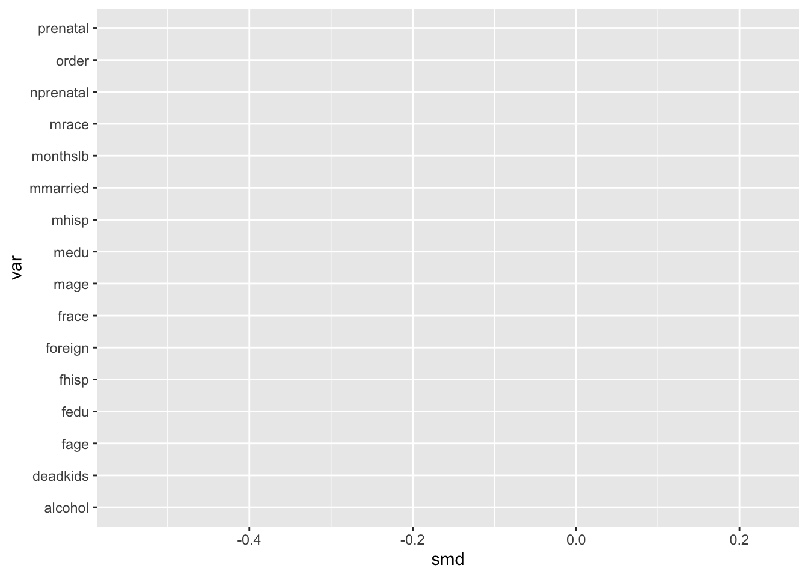
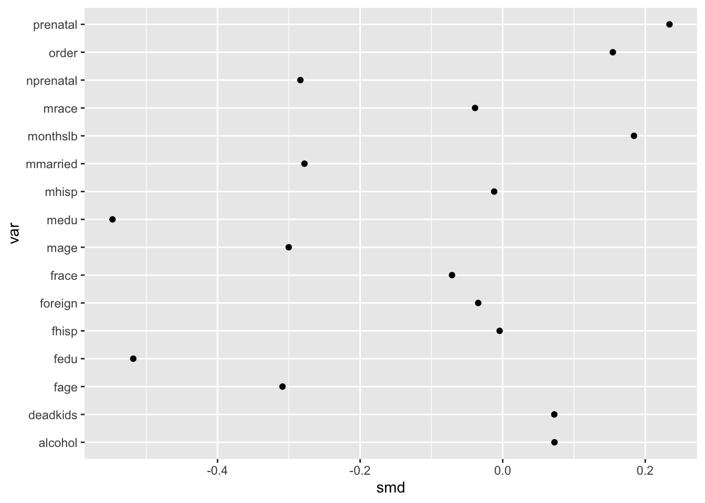
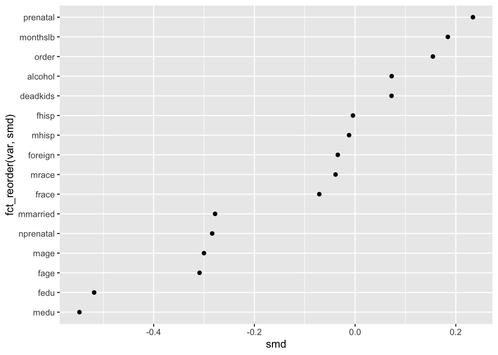
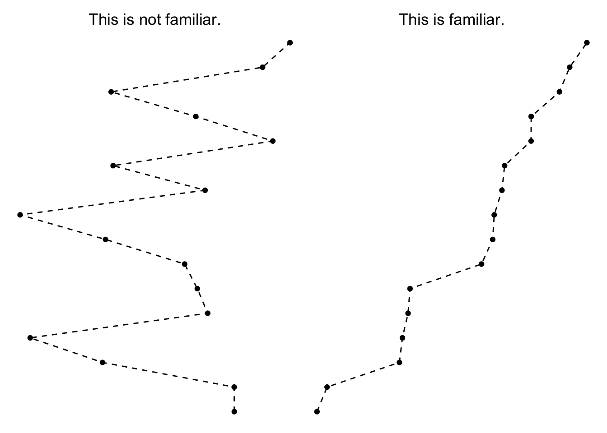
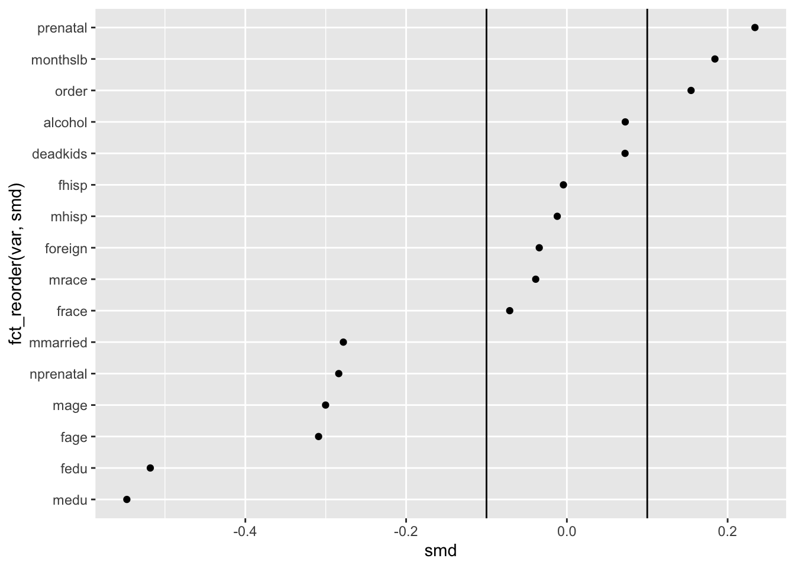
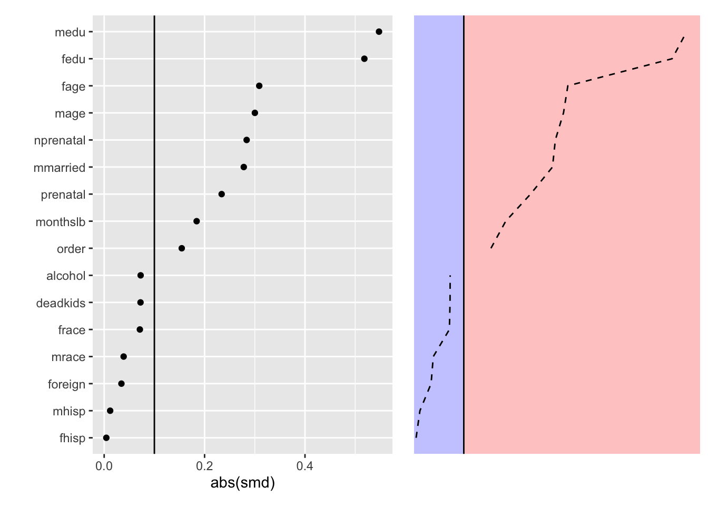
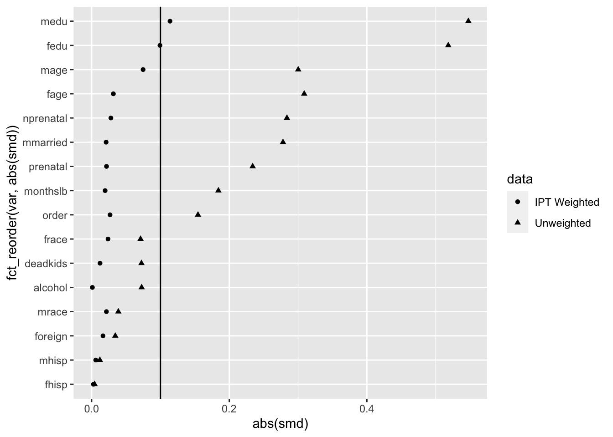
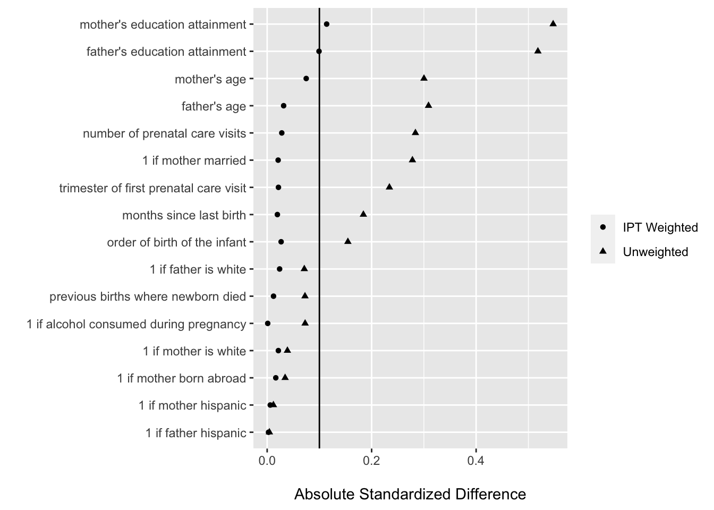
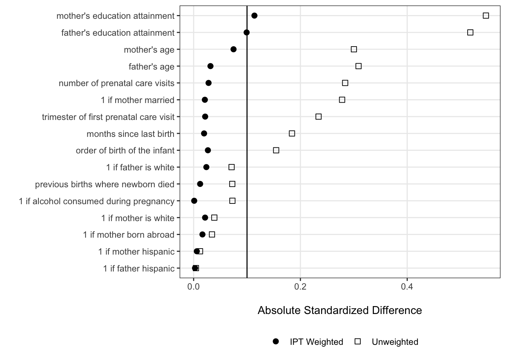

Case Study A: Assessing treatment balance on covariates
Introduction about matching methods
This data visualization case study comes from the increasingly prevalent world of matching based methods for statistical inference using observational data. This vignette will provide some context about why such two-stage design-analysis methods are increasingly common, but folks interested in the nitty gritty should check out the many great resources for learning more about matching and weighting that other folks have created.
Propensity score matching (PSM) is the classical matching method for causal inference with observational data, predicated on the idea that we can approximate experimental conditions by matching treated cases (i.e. who did in fact receive a treatment of some form) to one or more control cases based on some set of pre-treatment covariates relevant to selection into the treatment. While the classical method still is frequently used, there are currently many different matching algorithms that can be used in place for identifying suitable control cases to match to treated ones.
Similarly, there are related classes of methods based on weighting and subclassification that aim to recompose an observed population such that the treated and control groups have like characteristics on observed characteristics relevant to a given treatment. These methods differ in some important ways from matching methods (e.g., in their potential use of the entirety of the starting observational data), but their end game is similar: construct the weighted data such that the treated and control groups are similar on pre-treatment values, then assess how post-treatment values differ. As such, we will refer to matching methods as encompassing these other related approaches to adjusting observational data for causal inference.
Motivation: why does balance matter?
For many years now, folks have used these methods to study effects of different treatments using observational data. This is because they can offer desirable properties (read: they don’t necessarily have to though).
Stuart (2010) says the following on this matter (emphasis added):
Alternatives to matching methods include adjusting for background variables in a regression model, instrumental variables, structural equation modeling, or selection models. Matching methods have a few key advantages over those other approaches. First, matching methods should not be seen in conflict with regression adjustment and in fact the two methods are complementary and best used in combination. Second, matching methods highlight areas of the covariate distribution where there is not sufficient overlap between the treatment and control groups, such that the resulting treatment effect estimates would rely heavily on extrapolation. Selection models and regression models have been shown to perform poorly in situations where there is insufficient overlap, but their standard diagnostics do not involve checking this overlap (Dehejia and Wahba, 1999, 2002; Glazerman et al., 2003). Matching methods in part serve to make researchers aware of the quality of resulting inferences. Third, matching methods have straightforward diagnostics by which their performance can be assessed.
Based on this description, we can see that a key benefit of these methods is that matching can avoid problems that arise when treated and control groups differ severely on one or more covariates (a problem that users of regression adjustment might not be sensitive to). Observed data typically start in an imbalanced state between treated and control groups, where observed values may differ to a significant degree (i.e. on a t-test). The ultimate goal of any matching or weighting is then to induce covariate balance with the chosen matching-based method.
Despite these motivations being pretty clear (including diagnostics being one of the three), many papers have failed to document the extent to which their matching or weighting method is having the desired effect. Accordingly, there has been a longstanding call from methodologists about giving greater attention to whether these methods have mitigated concerns about confounding-on-observables sufficiently.
The classical methods are expected to induce balance as sample size grows to infinity, but frequently we have small data where residual balance can remain a problem after matching or weighting. In especially imbalanced data, matching and weighting can even be worse than regression adjustment (e.g., by giving extreme weight to cases whose covariate combination is exceptionally rare). And while new methods like entropy balancing provide even more desirable properties than classical methods, such approaches can still sometimes fail to induce the necessary balance on these covariates and so we need to document whether they are satisfactory.
Bottom line: just check for balance, ok?
A Graphical Solution or: How I Learned to Love the Love Plot
The solution to this problem turns out to be pretty straightforward. Calculate statistics for balance before and after matching/weighting, and just use those to show the reader what is going on with respect to the covariate distribution of the treated and control cases before and after any matching-based methods
For binary treatments, the statistic of interest is typically a standardized mean difference.
\[ SMD = \frac{\mu_{treat} - \mu_{control}}{SD_{pooled}} \]
Since we are most concerned with magnitudes of difference and not sign, it is common to look at absolute standardized mean differences as an alternative. We are then concerned with whether there are relatively large differences between the treated and control cases along the covariates of interest, with absolute values of SMD > .10 conventionally taken to be too large of a difference. This is not a hard and fast rule, much like with alpha levels in the context of hypothesis testing, so for all intents and purposes the best case is that treatment and control groups have as similar of mean levels on covariates as possible.
While a table can certainly work for this sort of information (and beats nothing!), this is a case where a data visualization can actually be more intuitive for the sort of comparisons and takeaways we want readers to draw from this diagnostic information.
Visualizing balance statistics
Enter: the Love plot. Credited to an author, Thomas E. Love, from Ahmed et al. (2006), the following figure from that article presents absolute standardized mean differences (in terms of % of SD) as a plot based on points denoting each covariate’s pre- and post-match value.

image
Ahmed, A., Husain, A., Love, T. E., Gambassi, G., Dell’Italia, L. J., Francis, G. S., … & Bourge, R. C. (2006). Heart failure, chronic diuretic use, and increase in mortality and hospitalization: an observational study using propensity score methods. European heart journal, 27(12), 1431-1439.
Why is the Love plot better than a table, or some other type of figure?
To avoid burying the lede, this is an effective visualization because it leverages how the mind perceives the shapes (or in fancy terms, graphical primatives) within the plot to convey an overall takeaway. It is obvious from looking at the plot that the pre-match and post-match covariate balances differ, and we can see that the post-match SMDs are all quite small.
Gestalt psychology offers some useful concepts for describing why exactly those conclusions are obvious. Nesbitt and Friedrich (2002) outline how so-called Gestalt “Laws” (read: principles) map onto how readers tend to interpret a given data visualization. In the spirit of this being a case study in data visualization (rather than matching methods), we’re going to talk about these Gestalt principles throughout the construction of our own Love plot since they inform generalized guidelines about how to present quantitative information.
Setup
Software dependencies
We need to do some housekeeping before we will be ready for making our own plots. We’ll start by loading the necessary software libraries for this vignette.
library(tidyverse) #ggplot2, dplyr, forcats
library(cobalt) #bal.tabData
We’re going to use the data that was used in the following Cattaneo (2010) paper focused on the effect of maternal smoking on child low birth weight status.
Cattaneo, M. D. (2010). Efficient semiparametric estimation of multi-valued treatment effects under ignorability. Journal of Econometrics, 155(2), 138-154.
#load the data
cattaneo <- haven::read_dta("./data/cattaneo2.dta")
#this will come in handy later
cattaneo_labels <- cattaneo %>% map_chr(~attributes(.)$label)
#now remove the labels
cattaneo <- haven::zap_labels(cattaneo)
#here's what it looks like
glimpse(cattaneo)## Rows: 4,642
## Columns: 23
## $ bweight <dbl> 3459, 3260, 3572, 2948, 2410, 3147, 3799, 3629, 2835, 3880,…
## $ mmarried <dbl> 1, 0, 1, 1, 1, 0, 1, 1, 1, 1, 1, 0, 1, 1, 0, 1, 1, 1, 1, 0,…
## $ mhisp <dbl> 0, 0, 0, 0, 0, 0, 0, 0, 0, 0, 0, 0, 0, 0, 0, 0, 0, 0, 0, 0,…
## $ fhisp <dbl> 0, 0, 0, 0, 0, 0, 0, 0, 0, 0, 0, 0, 0, 0, 0, 0, 0, 0, 0, 0,…
## $ foreign <dbl> 0, 1, 1, 0, 0, 0, 0, 0, 0, 0, 0, 0, 0, 0, 0, 0, 0, 0, 0, 0,…
## $ alcohol <dbl> 0, 0, 0, 0, 0, 0, 0, 0, 0, 0, 0, 0, 0, 0, 0, 0, 0, 0, 0, 0,…
## $ deadkids <dbl> 0, 0, 0, 0, 0, 0, 0, 0, 0, 0, 0, 1, 0, 0, 0, 0, 0, 0, 0, 1,…
## $ mage <dbl> 24, 20, 22, 26, 20, 27, 27, 24, 21, 30, 26, 20, 34, 21, 23,…
## $ medu <dbl> 14, 10, 9, 12, 12, 12, 12, 12, 12, 15, 12, 12, 14, 8, 12, 1…
## $ fage <dbl> 28, 0, 30, 30, 21, 40, 29, 33, 24, 33, 31, 22, 29, 26, 27, …
## $ fedu <dbl> 16, 0, 9, 12, 14, 12, 14, 12, 9, 15, 14, 12, 14, 8, 12, 11,…
## $ nprenatal <dbl> 10, 6, 10, 10, 12, 9, 16, 11, 20, 9, 14, 5, 13, 8, 4, 10, 1…
## $ monthslb <dbl> 30, 42, 17, 34, 0, 0, 29, 0, 0, 27, 0, 0, 26, 0, 0, 21, 33,…
## $ order <dbl> 2, 3, 3, 2, 1, 1, 3, 1, 1, 2, 1, 1, 2, 1, 1, 2, 2, 5, 2, 3,…
## $ msmoke <dbl> 0, 0, 0, 0, 0, 0, 0, 0, 0, 0, 3, 0, 0, 0, 0, 0, 0, 0, 0, 2,…
## $ mbsmoke <dbl> 0, 0, 0, 0, 0, 0, 0, 0, 0, 0, 1, 0, 0, 0, 0, 0, 0, 0, 0, 1,…
## $ mrace <dbl> 1, 0, 1, 1, 1, 1, 1, 1, 1, 1, 1, 0, 1, 1, 0, 1, 1, 1, 1, 0,…
## $ frace <dbl> 1, 0, 1, 1, 1, 1, 1, 1, 1, 1, 1, 0, 1, 1, 0, 1, 1, 1, 1, 0,…
## $ prenatal <dbl> 1, 1, 1, 1, 1, 1, 1, 1, 1, 1, 1, 1, 1, 1, 2, 1, 1, 1, 1, 2,…
## $ birthmonth <dbl> 12, 7, 3, 1, 3, 4, 12, 6, 6, 12, 8, 3, 9, 8, 11, 10, 7, 8, …
## $ lbweight <dbl> 0, 0, 0, 0, 1, 0, 0, 0, 0, 0, 0, 0, 0, 0, 1, 0, 0, 0, 0, 0,…
## $ fbaby <dbl> 0, 0, 0, 0, 1, 1, 0, 1, 1, 0, 1, 1, 0, 1, 1, 0, 0, 0, 0, 0,…
## $ prenatal1 <dbl> 1, 1, 1, 1, 1, 1, 1, 1, 1, 1, 1, 1, 1, 1, 0, 1, 1, 1, 1, 0,…Treatment variable
For the purpose of simplification, we’ll rely on the binary treatment indicator for whether the mother ever smoked during pregnancy, mbsmoke, though there is a frequency based measure too that looks at different levels of exposure among those who smoked.
#here's our treatment measure
table(cattaneo$mbsmoke, useNA = "always")##
## 0 1 <NA>
## 3778 864 0Your 🥇 ❤️ 📈
Ok, let’s get started with doing some visualization for ourselves. We are going to start by looking at the balance of the treatment and control groups across all of the covariates in the cattaneo data. Using every covariate is not a theoretically-driven decision, so in practice some consideration needs to be given to whether this is appropriate.
We can use the cobalt library’s bal.tab() function to obtain balance statistics (i.e., SMDs) for a set of covariates. The first implied argument is a data frame, and the second argument treat is a vector indicating the treatment of each row within the covariate data frame.
NB: Instead of creating a new separate data frame to pass as the first argument, we instead just use a small pipe within the bal.tab() call to select() the covariate columns using ranges specified by :.
#pass this to cobalt's bal.tab for quick estimation of SMDs
obs_balance <- bal.tab(cattaneo %>% select(mmarried:order, mrace:prenatal),
treat = cattaneo$mbsmoke)## Note: 's.d.denom' not specified; assuming pooled.Let’s first inspect by printing to console.
#it's a list with a print method for console output
obs_balance## Balance Measures
## Type Diff.Un
## mmarried Binary -0.2781
## mhisp Binary -0.0120
## fhisp Binary -0.0043
## foreign Binary -0.0344
## alcohol Binary 0.0726
## deadkids Binary 0.0724
## mage Contin. -0.3002
## medu Contin. -0.5474
## fage Contin. -0.3089
## fedu Contin. -0.5183
## nprenatal Contin. -0.2838
## monthslb Contin. 0.1842
## order Contin. 0.1545
## mrace Binary -0.0388
## frace Binary -0.0711
## prenatal Contin. 0.2340
##
## Sample sizes
## Control Treated
## All 3778 864We need to process the resulting object into something that we can plot with ggplot(), so we’ll inspect what’s in the obs_balance list and then wrangle the results into a data frame that fits the 1 row:1 geometry paradigm of ggplot().
FYI, love.plot() is a pretty good default plot method provided by cobalt that you can use with bal.tab list objects, but since we want to dig into making plots of our own we’re going to bypass this route.
#there are multiple elements to the bal.tab object
ls(obs_balance)## [1] "Balance" "Observations"#but the Balance element is what we'll need for plotting
obs_balance <- obs_balance$Balance
obs_balance$var <- rownames(obs_balance)
obs_balance <- obs_balance %>%
select(var, type = Type, smd = Diff.Un) %>%
as_tibble() %>%
mutate(data = "Unweighted")
#inspect what we'll actually plot
glimpse(obs_balance)## Rows: 16
## Columns: 4
## $ var <chr> "mmarried", "mhisp", "fhisp", "foreign", "alcohol", "deadkids", "…
## $ type <chr> "Binary", "Binary", "Binary", "Binary", "Binary", "Binary", "Cont…
## $ smd <dbl> -0.27807617, -0.01195702, -0.00428590, -0.03435705, 0.07264217, 0…
## $ data <chr> "Unweighted", "Unweighted", "Unweighted", "Unweighted", "Unweight…Let’s now make a first plot (we’ll keep things simple in case you are new to ggplot). In case you are unfamiliar, ggplot() expects a data frame (or equivalent) object as its first argument, and an aesthetic function (i.e., aes()) as its second argument. You don’t have to abide by this, but the main instance where not following this convention is advantageous is if you have several different data frames to plot at once.
ggplot(obs_balance, aes(x = smd, y = var))
Then, after defining a first ggplot function with the aforementioned arguments, the key is to define the geometries that we’d like rows of our input data frame to correspond to. Here we use geom_point() to plot each x and y combination in our data frame obs_balance as a point.
ggplot(obs_balance, aes(x = smd, y = var)) +
geom_point()
Diagonalizing for familiarity
By default, R will order character variables like var alphabetically. This is understandable but generally terrible for visualizations.
Sorting the covariates in terms of increasing or decreasing magnitude is thus essential to making the order of the y-axis values more coherent. We are going to call this diagonalizing the data to make the takeaway of interest more obvious.
ggplot(obs_balance, aes(x = smd, y = fct_reorder(var, smd))) +
geom_point() 
This brings us to the first principle of interest, the Law of Familiarity which says that, “Things are more likely to form groups if the groups appear familiar or meaningful.”
In the context of the Love plot, this means that the mind is more naturally inclined to connect the dots from the underling points we plotted. Before we sorted the y-axis, the underlying pattern was quite chaotic, making it hard to see any broader trend beyond a single value (i.e. this is not a line form we are familiar with).
Once we sorted the y-axis, though, it becomes more obvious which covariates have the most extreme starting imbalance—just look to the top and bottom entries on the y-axis.

Annotating to manipulate proximity
We can still do a few more things to make this plot as interprettable as possible for readers.
Since a common convention is to assess SMD based on whether they are greater than a threshold value, we can make that easier for our reader to see that by using vertical lines created by geom_vline() at the common cutpoints of -.1 and .1.
Once we add these vertical rules to the plot, we disrupt (but don’t totally stop) the brain’s tendency to see a single uninterrupted line. Instead, the plot becomes defined by groups according to the three plot regions—covariates with negative imbalance, covariates with acceptable balance and covariates with positive imbalance.
ggplot(obs_balance, aes(x = smd, y = fct_reorder(var, smd))) +
geom_point() +
geom_vline(xintercept = .10) +
geom_vline(xintercept = -.10)
This brings us to another principle from Gestalt psychology, the Law of Proximity which says that, “Things that are near to each other appear to be grouped together.” By adding the vertical lines, we alter which things seem near to each other, and by extension, what we tend to group together as meaningful as a result.
We can illustrate this idea with an even simpler version of this idea is in the context of dividing absolute standardized differences into greater than or equal to /below .1 regions.

This brings us to a good point at which to pause since we’ve explored the interesting aspects of a Love plot visualizing only the observed balance.
We can and will finesse the plot further, but since these are more minor details we will move to incorporating a comparison set of estimates that reflect the balance induced by a chosen matching-based method.
Incorporating adjusted balance statistics
Now let’s say we are interested in using inverse probability of treatment weighting (IPTW) as our design stage.
This method shares many similarities with propensity score matching (PSM), but instead of selecting some subset of matched cases (as with PSM), we assign each case a weight based on its estimated probability of experiencing the treatment category it received, conditional on covariates we decide are relevant for selection.
The intention is that the IPTW reweight our observed data such that the folks who did not actually receive the treatment (maternal smoking) are more similar in covariate composition to the folks who did.
To create the IPTW, we first estimate a logistic regression model predicting treatment conditional on covariates.
#Hi, I'm the design stage model
ps_model <- glm(mbsmoke ~ mmarried + mhisp + fhisp + foreign + alcohol + deadkids +
mage + medu + fage + fedu + nprenatal + monthslb + order + mrace +
frace + prenatal,
data = cattaneo,
family = "binomial")We then use this model to predict the probability of exposure and compute weights based on the inverse of the predicted probability of exposure (in the case of treated cases) or the inverse of 1 minus the predicted probability of exposure (in the case of control cases). Hence the name, inverse probability of treatment weighting.
#estimate treatment probability
cattaneo$ps_score <- predict(ps_model, type = "response")
#construct propensity score weight
cattaneo$ipt_weight <- ifelse(cattaneo$mbsmoke == 1, #if treated
1/cattaneo$ps_score, #do one over PS
1/(1-cattaneo$ps_score)) #else, do one over 1 minus PSFollowing this manual weight estimation, we can pass bal.tab() a new weights argument so that the function will give us adjusted balance statistics in return.
ipt_balance <- bal.tab(cattaneo %>% select(mmarried:order, mrace:prenatal),
treat = cattaneo$mbsmoke,
weights = cattaneo$ipt_weight)## Note: 's.d.denom' not specified; assuming pooled.ipt_balance <- ipt_balance$Balance
ipt_balance$var <- rownames(ipt_balance)
ipt_balance <- ipt_balance %>%
select(var, type = Type, smd = Diff.Adj) %>%
as_tibble() %>%
mutate(data = "IPT Weighted")
balance_stats <- bind_rows(obs_balance, ipt_balance) We can now use our assembled balance statistics to create a full-fledged Love plot that shows how accounting for each case’s treatment propensity induces pretty good (but not perfect) balance along the selected covariates.
ggplot(balance_stats, aes(x = abs(smd), y = fct_reorder(var, abs(smd)), shape = data)) +
geom_point() +
geom_vline(xintercept = .10) 
Getting the labels right
If we are going to use a graphic in a formal capacity as a paper figure, a next crucial step is to ensure that the labels are intuitive.
In many cases, this might mean manually creating a dictionary for linking covariate column names to meaningful labels. Thankfully, these data come with a shortcut since they are from Stata and have labels to begin with.
#first make a data frame that we can join to the balance_stats df by var
label_dict <- data.frame(var = names(cattaneo_labels),
label = as.character(cattaneo_labels))
#make the join
balance_stats <- left_join(balance_stats, label_dict)## Joining, by = "var"#show the result
glimpse(balance_stats)## Rows: 32
## Columns: 5
## $ var <chr> "mmarried", "mhisp", "fhisp", "foreign", "alcohol", "deadkids", …
## $ type <chr> "Binary", "Binary", "Binary", "Binary", "Binary", "Binary", "Con…
## $ smd <dbl> -0.278076167, -0.011957017, -0.004285900, -0.034357048, 0.072642…
## $ data <chr> "Unweighted", "Unweighted", "Unweighted", "Unweighted", "Unweigh…
## $ label <chr> "1 if mother married", "1 if mother hispanic", "1 if father hisp…#visualize label, rather than var now
ggplot(balance_stats, aes(x = abs(smd), y = fct_reorder(label, abs(smd)),
shape = data)) +
geom_point() +
geom_vline(xintercept = .10) +
labs(x = "\nAbsolute Standardized Difference", y = "", shape = "")
Our final cosmetic adjustments
For the last bit of ggploting for this case study, we will make some minor adjustments aimed at increasing the interpretability of the plot in ways beyond its organization.
If plot organization is the workhorse kosher salt of data visualization (work with me here), but these final tweaks are the, um, often important finishing salt of graphical displays (nailed it).
Here the main adjustments are to:
- increase the point geometry size
- make the pre-weighting series hollow squares and the post-weighting series solid circles
- apply a theme that uses less ink / color where unnecessary
- move the legend to the bottom
- remove some of the panel gridding
ggplot(balance_stats, aes(x = abs(smd), y = fct_reorder(label, abs(smd)),
shape = data)) +
geom_point(size = 2.5) +
geom_vline(xintercept = .10) +
scale_shape_manual(values = c(16, 22)) +
labs(x = "\nAbsolute Standardized Difference", y = "", shape = "") +
theme_bw() +
theme(legend.position = "bottom",
panel.grid.minor = element_blank())
We can see from our finalized Love plot that there are still absolute standardized differences greater than .1 — this is OK for the purposes of learning about data visualization since we’re not doing this analysis for real. If we were doing this for real, it’d be a good time consider including higher-order terms for some covariates, or alternative weighting algorithms like entropy balancing.
Takeaways
- Love plots rock.
- We should think about familiarity and proximity when designing data visualizations like Love plots
- The basic idea of using point plots (rather than e.g., bar charts) with threshold lines extends to other contexts, including those where we incorporate estimates of uncertainty–regression coefficients, average marginal effects, etc.
Hands-on activity: Create a Love plot for the lalonde data set (used in many PS methods papers) or other demo PS data of your choice
Here the treatment is a job training program, with the outcome of interest being real earnings in 1978 (re78). The data are not balanced between treatment and control groups along the included covariates, so you should feel welcome to try using a matching method to construct weights or form a subsample that has greater balance along the covariates.
lalonde <- read_csv("https://raw.githubusercontent.com/robjellis/lalonde/master/lalonde_data.csv")## Rows: 614 Columns: 11
## ── Column specification ────────────────────────────────────────────────────────
## Delimiter: ","
## chr (1): ID
## dbl (10): treat, age, educ, black, hispan, married, nodegree, re74, re75, re78
##
## ℹ Use `spec()` to retrieve the full column specification for this data.
## ℹ Specify the column types or set `show_col_types = FALSE` to quiet this message.glimpse(lalonde)## Rows: 614
## Columns: 11
## $ ID <chr> "NSW1", "NSW2", "NSW3", "NSW4", "NSW5", "NSW6", "NSW7", "NSW8…
## $ treat <dbl> 1, 1, 1, 1, 1, 1, 1, 1, 1, 1, 1, 1, 1, 1, 1, 1, 1, 1, 1, 1, 1…
## $ age <dbl> 37, 22, 30, 27, 33, 22, 23, 32, 22, 33, 19, 21, 18, 27, 17, 1…
## $ educ <dbl> 11, 9, 12, 11, 8, 9, 12, 11, 16, 12, 9, 13, 8, 10, 7, 10, 13,…
## $ black <dbl> 1, 0, 1, 1, 1, 1, 1, 1, 1, 0, 1, 1, 1, 1, 1, 1, 1, 1, 1, 1, 1…
## $ hispan <dbl> 0, 1, 0, 0, 0, 0, 0, 0, 0, 0, 0, 0, 0, 0, 0, 0, 0, 0, 0, 0, 0…
## $ married <dbl> 1, 0, 0, 0, 0, 0, 0, 0, 0, 1, 0, 0, 0, 1, 0, 0, 0, 0, 0, 0, 0…
## $ nodegree <dbl> 1, 1, 0, 1, 1, 1, 0, 1, 0, 0, 1, 0, 1, 1, 1, 1, 0, 1, 0, 0, 1…
## $ re74 <dbl> 0, 0, 0, 0, 0, 0, 0, 0, 0, 0, 0, 0, 0, 0, 0, 0, 0, 0, 0, 0, 0…
## $ re75 <dbl> 0, 0, 0, 0, 0, 0, 0, 0, 0, 0, 0, 0, 0, 0, 0, 0, 0, 0, 0, 0, 0…
## $ re78 <dbl> 9930.0460, 3595.8940, 24909.4500, 7506.1460, 289.7899, 4056.4…